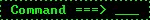
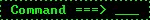

Thomas E's Internet Property
 New Posts every Wednesday!
New Posts every Wednesday!
 Guten Tag, welcome to my website! || Back to homepage ||
Guten Tag, welcome to my website! || Back to homepage ||
Humanity's essential reading list
About
In here, I have compiled a reading list that I think is essential to all who desire improve one's own self. I often rave about how important it is to read and learn how to deeply and criticially think about things. It is very important to learn how to stand out from the group think we see in modern society, and to truly become someone who know's how to spot their own biases. But I can say over and over again, yet it is never practical on it's own right. So, in here I've compiled a chronologial reading list.
The order in which you read these are important. You read them from start to finish, from 1 to infinity and beyond. Reading these in this light will make the ideas that are introduced; less sudden and more natural. You will see the connections and be able to intelligently draw one idea to another. Knowingly or not, that will change you and how you think. Know that if your currently reading a title on here and you simply just aren't getting anything from it, drop it. You will never learn from something you naturally resist.
You may also read multiple at a time, but, no more than 3.
A Foreword
Not every author with their work(s) mentioned is someone that I exactly endorse. And, not every work on here is mean't to be taken in a literal manner. For instance, Neville Goddards works are something that although I do think has a lot of intellectual value, are ultimately foolish to be interpreted in a serious manner even if that is originally what the author intended. Part of being able to think is being able to chew the food and spit out the bones.
I won't hold your hand and tell to agree with my interpretation with every work. I will trust to leave that up for your judgement.
1. The Well Educated Mind: A Guide to the Classical Education You Never had - Susan Wise Bauer
This book is more of a simplified billet-doux to Mortimer J Adler's "How to read a book". I found Mortimer's to be a bit too dense to put first, so I placed it here.
Knowing how to read is one thing, but knowing how to read a book is another. That is, being able to intelligently read. The intelligent reader know's that the process of reading Harry Potter, is just simply not the same to reading the works of homer. Both have their own levels of difficulty and need to have their own levels of concentration, how much time you give them, etc. And ultimately, their own process involved.
This book not only teaches you how to properly digest novels, history, literature, etc, but also knowing how to learn. Learning is very different from information. Picking up facts is not Learning, but indoctrination.
2. How To Read A Book - Mortimer J Adler
Treat this book as a expansion of the previous book. Mortimer get's more indepth on the various different levels of reading, annotating, etc. And also, just ultimately a classic and has been a huge voice to the realm of literacy and literature.
If you're Intellectual property is in here..
Occasionally, I do use others work(s) to reference in my writeups. I even back up and repost some of it. If you see your work(s) on here and you would like for me to take it down, send me a email and I will gladly do so. No Explanations or questions needed.


 
